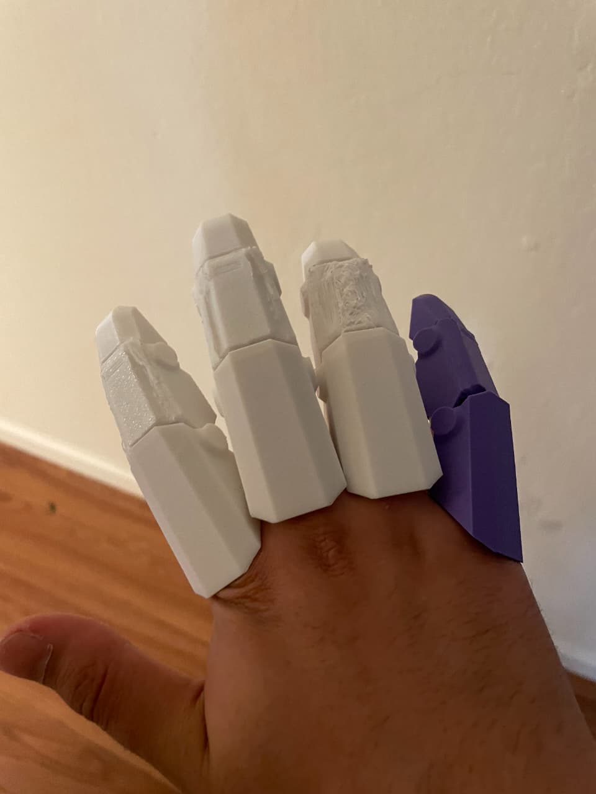

Guitar Hero Rhythm Game

Overview
This project started because I wanted to mess around with FreeRTOS on an ESP32 (pretty cool stuff!). The goal was to get multitasking working alongside an interactive UI while keeping everything real-time. After a ton of brainstorming, we thought up this musical glove idea which later evolved into a full Guitar Hero-style game. The system uses multiple FreeRTOS tasks running concurrently—one handling button input scanning, another managing the display and scrolling note highway, and a third controlling audio output and timing. The challenge was synchronizing these independent tasks without blocking, creating a responsive gaming experience where notes scroll down the screen and players must press the correct buttons in time with the music.
Key Features
- Real-time multitasking: Multiple FreeRTOS tasks handle input scanning, display updates, and audio playback independently without blocking each other, taking full advantage of ESP32's dual-core architecture
- Guitar Hero-style gameplay: Notes scroll down a highway display, and players press corresponding colored buttons in time with the music to score points and maintain a score multiplier
- Score tracking and combo system: Consecutive successful hits increase the score multiplier, while missed notes break the combo and can lead to failure if too many are missed
- Interactive visual feedback: Real-time display showing note highway, current score, combo multiplier, and performance meter
Technologies Used
- ESP32 microcontroller with dual-core processor for concurrent task execution
- ESP-IDF and FreeRTOS for real-time task scheduling and inter-task communication
- C programming for low-level embedded systems development
Gallery / Demo Videos
Challenges & Learnings
The toughest part was getting three separate tasks—input, display, and audio—to stay in sync without any noticeable lag. If the timing's even slightly off, the whole game becomes unplayable. FreeRTOS queues and semaphores saved me here, letting button presses register instantly while keeping audio perfectly locked to the beat. Setting up priority-based scheduling so time-critical audio could interrupt display updates when needed was crucial for keeping rhythm accuracy tight.
This project really cemented my understanding of real-time systems and task scheduling. More importantly, it taught me how to architect systems where multiple components need to work in perfect sync—exactly the kind of thinking that translates directly to robotics and control systems I want to work on.